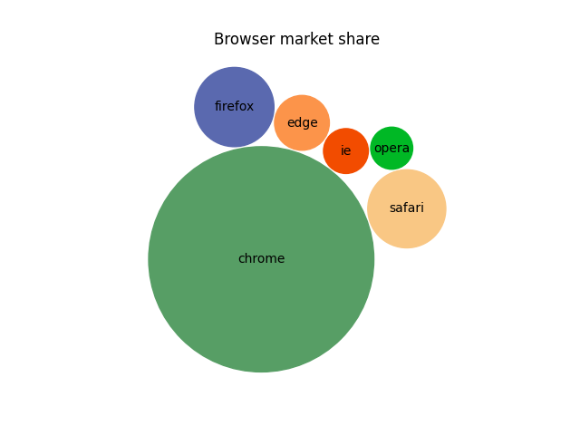

Note
Go to the end to download the full example code
Packed-bubble chart#
Create a packed-bubble chart to represent scalar data. The presented algorithm tries to move all bubbles as close to the center of mass as possible while avoiding some collisions by moving around colliding objects. In this example we plot the market share of different desktop browsers. (source: https://gs.statcounter.com/browser-market-share/desktop/worldwidev)
import matplotlib.pyplot as plt
import numpy as np
browser_market_share = {
'browsers': ['firefox', 'chrome', 'safari', 'edge', 'ie', 'opera'],
'market_share': [8.61, 69.55, 8.36, 4.12, 2.76, 2.43],
'color': ['#5A69AF', '#579E65', '#F9C784', '#FC944A', '#F24C00', '#00B825']
}
class BubbleChart:
def __init__(self, area, bubble_spacing=0):
"""
Setup for bubble collapse.
Parameters
----------
area : array-like
Area of the bubbles.
bubble_spacing : float, default: 0
Minimal spacing between bubbles after collapsing.
Notes
-----
If "area" is sorted, the results might look weird.
"""
area = np.asarray(area)
r = np.sqrt(area / np.pi)
self.bubble_spacing = bubble_spacing
self.bubbles = np.ones((len(area), 4))
self.bubbles[:, 2] = r
self.bubbles[:, 3] = area
self.maxstep = 2 * self.bubbles[:, 2].max() + self.bubble_spacing
self.step_dist = self.maxstep / 2
# calculate initial grid layout for bubbles
length = np.ceil(np.sqrt(len(self.bubbles)))
grid = np.arange(length) * self.maxstep
gx, gy = np.meshgrid(grid, grid)
self.bubbles[:, 0] = gx.flatten()[:len(self.bubbles)]
self.bubbles[:, 1] = gy.flatten()[:len(self.bubbles)]
self.com = self.center_of_mass()
def center_of_mass(self):
return np.average(
self.bubbles[:, :2], axis=0, weights=self.bubbles[:, 3]
)
def center_distance(self, bubble, bubbles):
return np.hypot(bubble[0] - bubbles[:, 0],
bubble[1] - bubbles[:, 1])
def outline_distance(self, bubble, bubbles):
center_distance = self.center_distance(bubble, bubbles)
return center_distance - bubble[2] - \
bubbles[:, 2] - self.bubble_spacing
def check_collisions(self, bubble, bubbles):
distance = self.outline_distance(bubble, bubbles)
return len(distance[distance < 0])
def collides_with(self, bubble, bubbles):
distance = self.outline_distance(bubble, bubbles)
return np.argmin(distance, keepdims=True)
def collapse(self, n_iterations=50):
"""
Move bubbles to the center of mass.
Parameters
----------
n_iterations : int, default: 50
Number of moves to perform.
"""
for _i in range(n_iterations):
moves = 0
for i in range(len(self.bubbles)):
rest_bub = np.delete(self.bubbles, i, 0)
# try to move directly towards the center of mass
# direction vector from bubble to the center of mass
dir_vec = self.com - self.bubbles[i, :2]
# shorten direction vector to have length of 1
dir_vec = dir_vec / np.sqrt(dir_vec.dot(dir_vec))
# calculate new bubble position
new_point = self.bubbles[i, :2] + dir_vec * self.step_dist
new_bubble = np.append(new_point, self.bubbles[i, 2:4])
# check whether new bubble collides with other bubbles
if not self.check_collisions(new_bubble, rest_bub):
self.bubbles[i, :] = new_bubble
self.com = self.center_of_mass()
moves += 1
else:
# try to move around a bubble that you collide with
# find colliding bubble
for colliding in self.collides_with(new_bubble, rest_bub):
# calculate direction vector
dir_vec = rest_bub[colliding, :2] - self.bubbles[i, :2]
dir_vec = dir_vec / np.sqrt(dir_vec.dot(dir_vec))
# calculate orthogonal vector
orth = np.array([dir_vec[1], -dir_vec[0]])
# test which direction to go
new_point1 = (self.bubbles[i, :2] + orth *
self.step_dist)
new_point2 = (self.bubbles[i, :2] - orth *
self.step_dist)
dist1 = self.center_distance(
self.com, np.array([new_point1]))
dist2 = self.center_distance(
self.com, np.array([new_point2]))
new_point = new_point1 if dist1 < dist2 else new_point2
new_bubble = np.append(new_point, self.bubbles[i, 2:4])
if not self.check_collisions(new_bubble, rest_bub):
self.bubbles[i, :] = new_bubble
self.com = self.center_of_mass()
if moves / len(self.bubbles) < 0.1:
self.step_dist = self.step_dist / 2
def plot(self, ax, labels, colors):
"""
Draw the bubble plot.
Parameters
----------
ax : matplotlib.axes.Axes
labels : list
Labels of the bubbles.
colors : list
Colors of the bubbles.
"""
for i in range(len(self.bubbles)):
circ = plt.Circle(
self.bubbles[i, :2], self.bubbles[i, 2], color=colors[i])
ax.add_patch(circ)
ax.text(*self.bubbles[i, :2], labels[i],
horizontalalignment='center', verticalalignment='center')
bubble_chart = BubbleChart(area=browser_market_share['market_share'],
bubble_spacing=0.1)
bubble_chart.collapse()
fig, ax = plt.subplots(subplot_kw=dict(aspect="equal"))
bubble_chart.plot(
ax, browser_market_share['browsers'], browser_market_share['color'])
ax.axis("off")
ax.relim()
ax.autoscale_view()
ax.set_title('Browser market share')
plt.show()